About
赤れんが庁舎とは
北海道庁旧本庁舎は、赤レンガ庁舎の愛称で知られる北海道の旧本庁舎。
札幌のシンボル的存在で国の重要文化財に指定された。
1888(明治21)年、アメリカ風のネオ・バロック様式を
取り入れ建立された明治期を代表する歴史的建造物。
現在では観光名所として、またポプラや桜などが
植樹された庭とイチョウ並木は
街中のオアシスとして親しまれる。

Event
四季折々のイベント
札幌市では、季節の移り変わりを楽しむイベントが1年を通じて行われます。
伝統的な神社のお祭りから、北海道の食やビールを野外で味わう催し、
街の中心に巨大雪像が登場するイベントまでじつに個性豊か。
みなさんは、どのイベントが気になるでしょうか。
- 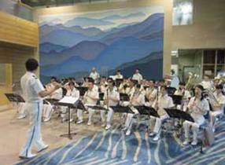
北海道警察音楽隊赤レンガコンサート
開催日 ： 8月22日(火)
時間 ： 12時10分～12時50分
場所： 前庭道警音楽隊による演奏とステージドリルで 楽しいお昼のひとときを。
- 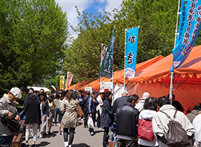
北のめぐみ愛食フェア2017
開催日 ： 9月5日(火)～9月8日(金)
時間 ： 13時30分～15時40分
場所： 前庭生産者がそれぞれの産地や食材の情報を 提供しながら対面販売を行います。
- 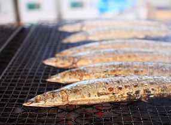
根室さんま直送市
開催日 ： 9月20日(水)～9月21日(木)
時間 ： 10時00分～18時※最終日は17時まで
場所：前庭根室直送のさんまの販売や根室特産品を 特別価格でご購入いただけます。
News
お知らせ
- 赤れんが庁舎前庭の桜の開花情報をお知らせしています。(総務部総務課)
- 一般社団法人北海道建設業協会及び一般社団法人札幌建設事業協会より
赤れんが庁舎前庭のレンガ舗装を御寄贈いただきました。(総務部総務課) - 赤れんがFree Wi-Fiサービスの提供中です。(総務部総務課・経済部観光局)
Gallery
赤れんがの四季
それぞれの季節によって表情を変える赤れんがの美しい風景。 一度来たことある皆様も、これからの皆様も、
札幌市民と一緒に季節を感じながらお散歩しませんか？
- 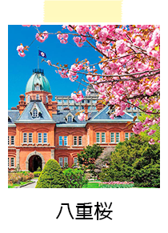
- 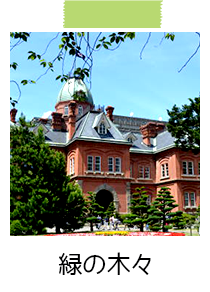
- 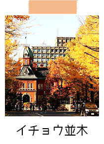
- 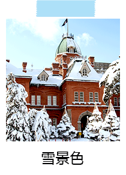
- 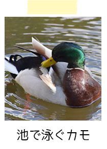
- 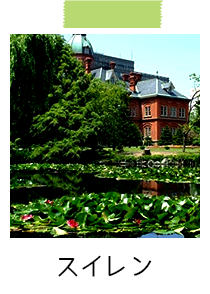
- 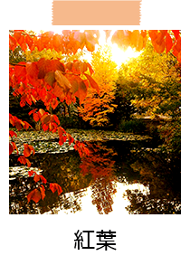
- 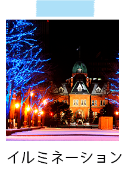